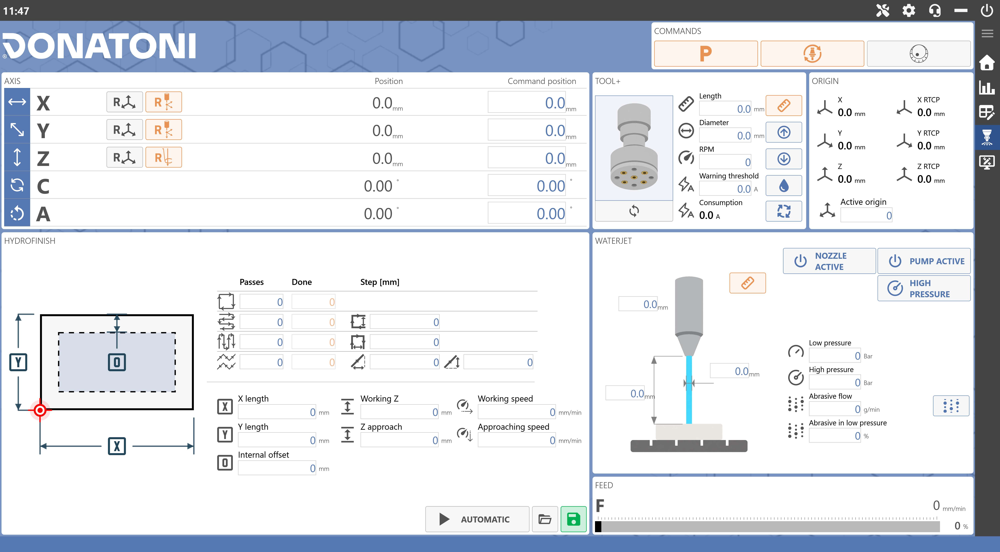
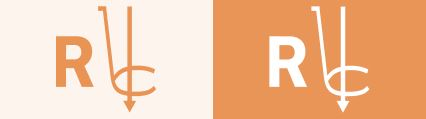
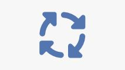
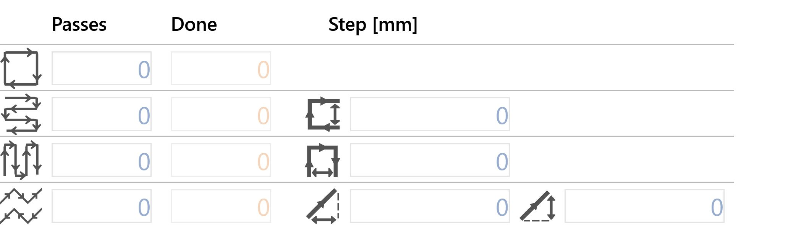
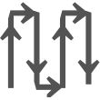
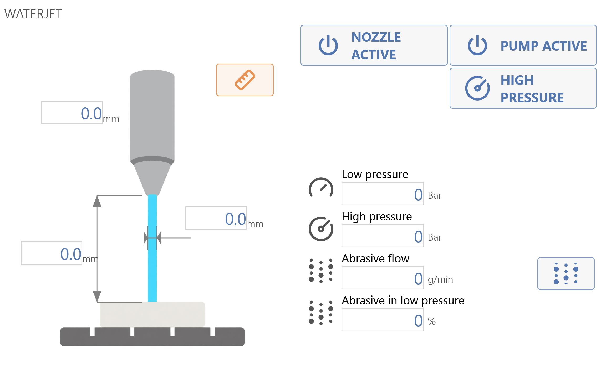

This interface can be accessed by pressing the following button in the right-hand side menu:
Hydrofinish When available, this button is displayed after SERVICE.
The following image shows an example of the Hydrofinish interface:

Commands
This area is located at the top centre of the interface. It allows the operator to perform the following actions:
Automatic parking When pressed, the machine automatically moves the “X”, “Y”, “Z” and “C” axes to their zero positions. The machine performs the movements in the following order: (A) - “Z” axis to the absolute zero position; (B) - “C” axis to the absolute 0 position; (C) - “X” and “Y” axes simultaneously to their absolute zero positions;
Manual Tool Change Pressing the button starts the tool-change procedure.
Remote Control Enables/disables the Remote Control.
Axes
This area is located in the upper-left section of the interface.
Axis buttons
The following buttons are available only in this operating mode:
Reset Axis Pressing this button sets the active origin to zero at the current position of the corresponding axis (X, Y or Z). The axis reset operation can only be performed on origins other than 0 (zero). To use the tool coordinate origin (TCP), the correct dimensions of the installed tool must be set before pressing the Reset Axis button.
Reset X and Y origins The X- and Y-axis origins can be reset using the cross laser.

Reset Z origin The Z-axis origin can be reset using the slab probe.
Tool Plus
This area is located in the upper-right section of the interface and is used to manage the Tool Plus:
Tool Plus parameters
Length Indicates the distance between the tool tip and a reference point.
Diameter Measurement of the tool’s maximum diameter.
RPM Indicates the maximum spindle rotation speed in revolutions per minute. This value corresponds to 100% on the disc control potentiometer.
Ampere threshold Alarm threshold in Amps.
Intake Current consumption in Amps.
Tool Plus buttons
Change mode Switches between Tool_ and Hydrofinishing modes.
Probe tool Performs the procedure for automatically measuring the length of the Tool Plus tool.
Raise Raises the machine unit on which the tool is installed.
Lower Lowers the machine unit on which the tool is installed.
Turn water on/off Controls the water flow from the Tool Plus pipe.

Enable/disable rotation Starts or stops Tool Plus rotation.
Origin
This area is located in the upper-right section of the interface, below the top bar:
Hydrofinish
This section is located in the lower-left section of the interface and is used to manage the Hydrofinish machining parameters:
Hydrofinish pass type

Perimeter The cutting operation will affect only the perimeter of the selected geometric shape.
Horizontal passes Multiple horizontal passes will be performed.

Vertical passes Multiple vertical passes will be performed.
Zigzag passes Multiple zigzag passes will be performed.
Left-to-right step Distance along the Y axis between two consecutive passes from left to right.
Top-to-bottom step Distance along the X axis between two consecutive passes from top to bottom.
Zigzag X step Distance along the X axis used to define the zigzag path step.
Zigzag Y step Distance along the Y axis used to define the zigzag path step.
Hydrofinish parameters
Horizontal dimension Horizontal dimension of the rectangle in which machining is performed.
Vertical dimension Vertical dimension of the rectangle in which machining is performed.
Internal offset Sets an inward offset from the rectangle for machining.
Machining Z Z coordinate relative to the slab at which the machine performs Hydrofinish machining.
Approach Z Z coordinate relative to the slab at which the machine performs the approach.
Working speed Indicates the speed at which machining will be performed.
Approach speed Indicates the required positioning speed along the Z axis to the selected coordinate.
Hydrofinish bottom bar
Automatic Switches between Automatic and Manual.
Load recipe Allows the operator to load a recipe.
Save Recipe Allows new recipes to be saved.
Load recipe
The panel for loading a recipe initially appears as follows:
After a recipe has been selected, a preview of its values is displayed:
Delete Closes the panel without loading a new recipe.
Confirm Loads the values of the selected recipe and closes the Load recipe.
Waterjet
This area is located in the centre-right section of the application and provides the operator with the following options:

Tool Plus buttons
Measure tool Performs the procedure for automatically measuring the length of the Tool Plus tool.
Jet active Turns on the jet and indicates whether it is active.
Pump active Turns on the pump and indicates whether it is active.
High pressure Allows high or low pressure to be selected.
Abrasive active Activates the use of abrasive.
Tool Plus parameters
Low pressure Water pressure when the water is delivered at low pressure.
High pressure Water pressure when the water is delivered at high pressure.
Abrasive flow Quantity of abrasive conveyed in one minute.
Abrasive in LP Percentage of abrasive flow when the machine is in low-pressure mode.

/3.4-20261023-073231.png)
/1.0.png)
/1.1.png)
/1.3.png)
/2.0-20261022-094915.png)
/3.6.png)
/3.7.png)
/3.0.png)
/3.3_b-20261023-053843.png)
/3.4_b-20261023-053756.png)
/3.5_b-20261023-053926.png)
/3.6_b-20261023-054008.png)
/3.9.png)
/3.10.png)
/3.11.png)
/4.0.png)
/5.0.png)
/5.2.1.png)
/5.2.2.png)
/5.2.4.png)
/5.2.5.png)
/5.2.6.png)
/5.2.7.png)
/5.2.8.png)
/5.3.0.png)
/5.3.1.3_b-20261023-055620.png)
/5.3.2.1_b-20261023-055706.png)
/5.3.2.3_b-20261023-055746.png)
/5.3.2.4_b.png)
/5.4.0_disable.png)
/5.4.1.1-20261023-140113.png)
/5.4.2.png)
/5.4.3.png)
/5.5.1.png)
/5.5.2-20261023-134836.png)
/5.5.3.1-20261023-135238.png)
/7.3_on.png)
/7.1_off-20261022-115614.png)
/7.1_on-20261022-115711.png)
/7.2_off-20261022-115711.png)
/7.8_off-20261022-120040.png)
/7.4_a-20261022-115933.png)
/7.5_a-20261022-115934.png)
/7.6_a-20261022-115934.png)
/7.0.png)